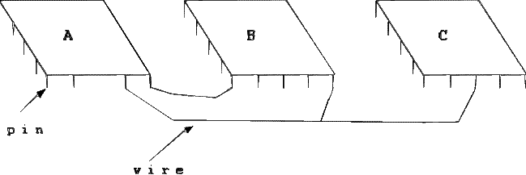

Para efeitos da nota atribuida à resolução de exercícios ao longo do semestre - Submeter até 23:59 de 29 de Maio
(o problema continuará depois disponível para submissão, mas sem contar para a nota)
[para perceber o contexto do problema deve ler o guião da aula #08]
Um circuito electrónico consiste em diversos componentes, pontos de contacto (pins) e ligações (wires). A figura seguinte mostra um circuito com 3 componentes: A, B e C. Cada ligação envolve um par de pontos de contacto.

Dois pontos de contacto a e b dizem-se electronicamente equivalentes se têm uma ligação directa entre eles, ou se se existe um sequência de pontos de contacto a1, a2, ..., ak, tal que existe ligação entre (a,a1), (a1,a2), ..., (ak, b). Uma rede é um conjunto máximo de pontos de contacto electronicamente equivalentes. Máximo é aqui usado no sentido de traduzir que nenhum ponto de contacto fora da rede é electronicamente equivalente a qualquer ponto dentro da rede.
Dado um conjunto de pontos de contacto e as suas respectivas ligações, a tua tarefa é descobrir o número de redes diferentes que existem no circuito. A figura seguinte ilustra um circuito com 3 redes.
Na primeira linha vem um número N indicando o número de pontos de contacto existentes. Na segunda linha vem um número L indicando o número de ligações existentes. Seguem-se L linhas, cada uma com um par de números diferentes indicando que pontos de contacto estão conectados pela ligação. Os pontos de contacto são sempre identificados por números de 1 até N. Note que as ligações não vêm por nenhuma ordem em específico e que nunca aparecem ligações repetidas.
Deve ser imprimida uma única linha, contendo o número de redes do respectivo circuito.
São garantidos os seguintes limites em todos os casos de teste que irão ser colocados ao programa:
| 1 ≤ N ≤ 100 | Número de pontos de contacto | |
| 0 ≤ L ≤ 100 | Número de ligações |
14 11 1 11 7 11 11 12 12 2 12 8 3 13 13 4 13 14 14 9 14 5 10 6
3
O exemplo de input corresponde à figura do enunciado.
Desenho e Análise de Algoritmos (CC2001)
DCC/FCUP - Faculdade de Ciências da Universidade do Porto